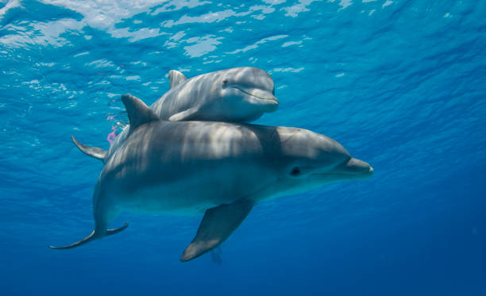

Los delfines son unos de los animales más inteligentes del océano. Son mamíferos acuáticos que pertenecen a la familia de los cetáceos. Se comunican entre ellos mediante un sistema complejo de silbidos y sonidos.
Aquí puedes ver a este animal increíblemente pro:
